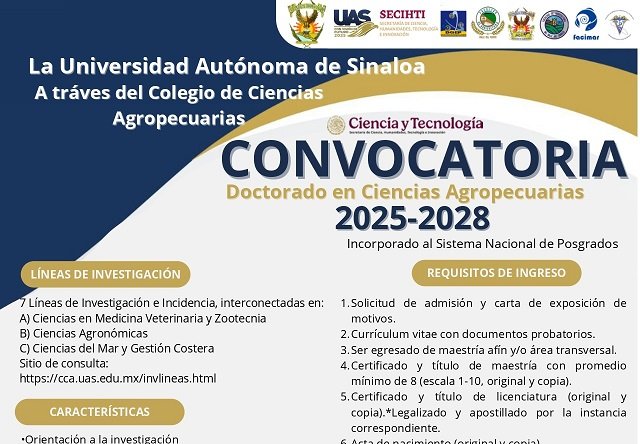
DoctoradoDoctorado en Ciencias Agropecuarias
Programa enfocado en la generación de conocimiento innovador y formación de investigadores de alto nivel para el sector agropecuario.
Ver Convocatoria y Requisitos →Programas de posgrado con reconocimiento en el Sistema Nacional de Posgrados (SNP)

DoctoradoPrograma enfocado en la generación de conocimiento innovador y formación de investigadores de alto nivel para el sector agropecuario.
Ver Convocatoria y Requisitos →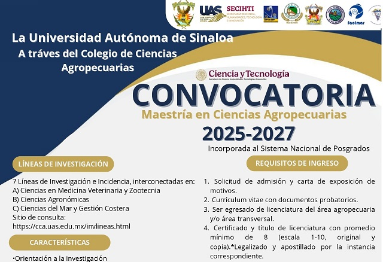
MaestríaEspecialización científica y aplicada en sanidad vegetal, biotecnología, producción pecuaria y acuícola sustentable.
Ver Convocatoria y Requisitos →Últimas actividades académicas, científicas y logros de nuestra comunidad
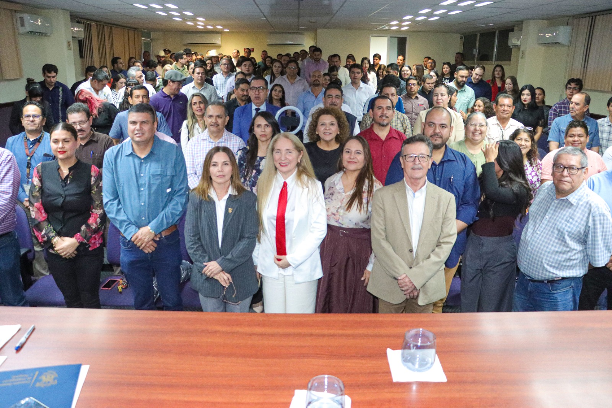
EventoEncuentro de estudiantes e investigadores en ciencias agropecuarias para la divulgación de avances científicos.
Leer Más →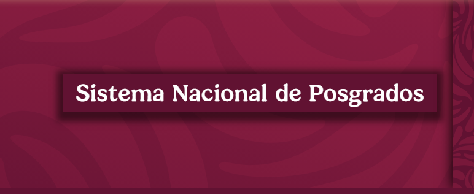
AcreditaciónObtención de la distinción en el Sistema Nacional de Posgrados para los programas de Doctorado y Maestría.
Ver Detalles →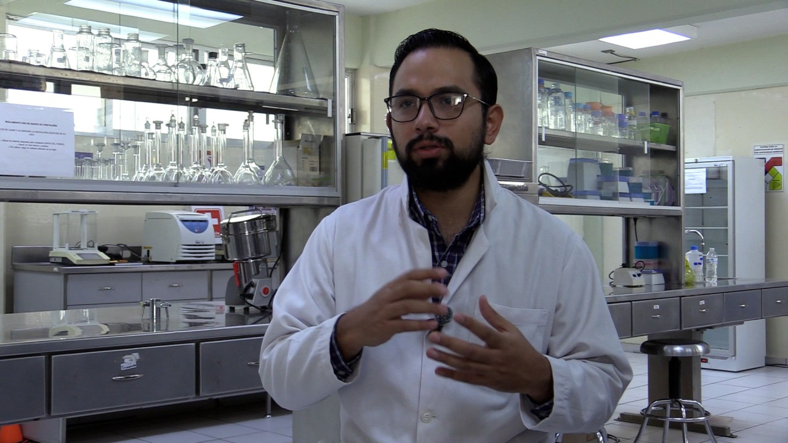
InvestigaciónDoctorando de la UAS desarrolla proyecto científico sobre el aprovechamiento y metabolitos de plantas medicinales.
Conocer Proyectos →Visítanos en nuestras instalaciones o contáctanos para asesoría académica
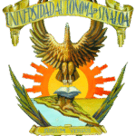
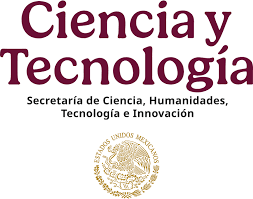
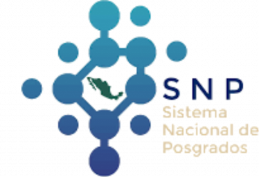
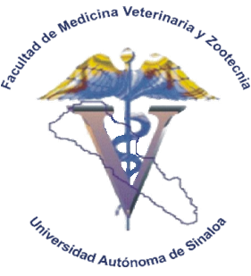
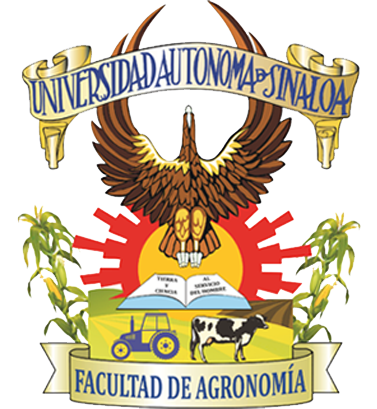
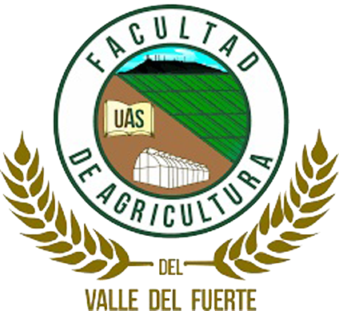